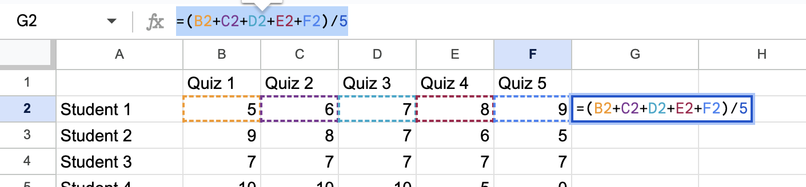

Spreadsheets can be used for organizing information and presenting it in a pretty way, but they can also be powerful computational tools with a little knowhow.
We’ll use Google Sheets, because we all have access to that. While the details may change, the same principles will apply in any spreadsheet, like Excel. First, we orient ourselves to what we see and how to get around. When you open a new Google Sheet, you’ll see something like this:
Clicking on “Untitled Spreadsheet” will allow you to rename your file, and a folder with an arrow icon to the right will let you save your file where you choose. The small boxes are called cells and clicking in one allows you to type in it directly. The entries in the cells can be formatted with the quick tools menu across the top.
Check for Understanding1.5.1.
To practice formatting, try to recreate the schedule above in your own spreadsheet.
In order to use spreadsheets for computations, the most important thing to understand is how to reference cells (the little boxes). You’ll write formulas and the values that are plugged in to those formulas are those in particular cells. Rather than typing hte value yourself, you reference the cell with its column letter and row number. The cell outlined in blue above is A1. The Friday math class is cell F3. The Wednesday lab occupies cells D6:D8, (the colon is used to indicate a range). While the options for labels will vary, this is similar to naming the squares on a chess board, or calling out a shot in the game Battleship, for finding your seat in a theater by the row and seat.
For our working example, we’ll set up a spreadsheet to track grades in a made up course. You are encouraged to follow along by creating the same spreadsheet and completing the same steps. You can also use this link 1
We will start by listing our students. Type “Student 1” in cell A2 and “Student 2” in cell A3. We could continuing typing following this pattern, or let the sheet do the work for us! Highlight the two cells, click and hold on the blue dot in the lower right corner, and drag that down until 10 total cells are highlighted. When you release, you should see Student 1 through Student 10 in cells A2:A11.
(a)Start of the list
(b)Expanded list
Figure1.5.2.Dragging a start to a list to follow a pattern.
Check for Understanding1.5.3.
Use a similar strategy to enter Quiz 1 through Quiz 5 in cells B1:F1.
We’re going to assign each of these students some made up quiz scores. You can copy the same numbers here, or make up your own. Use the tab button to move to the cell to the right after typing a number. The return key will move you to the next row down; sometimes directly below and sometimes back to the left at the start of your entry area. You can always use arrows too or click in a cell you want to type in.
Now, we have some data to work with! If you want to do computations, you need to start your entry in the cell with “\(=\)”. You can do this and simply use a spreadsheet like you might use a calculator. Click in cell G12, type “=(5+6+7+8+9)/5”, and hit enter. The entry in the cell should look like 7, and if you click on the cell again, you’ll see the formula you used in the formula bar near the top. This computed the quiz average of Student 1.
If instead of typing in the numbers we want to average directly, we reference the cells where those scores live, then we can drag to copy the formula similar to what we did for the Student names. Click in cell G2 and type “=(B2+C2+D2+E2+F2)/5” and hit enter. Rather than typing the name of a cell, you can also click on that cell. In many cases, once you type the “\(=\)”, you will get suggestions of formulas to use. Once you’re a bit more comfortable with what’s going on, that can be a big time saver.

One of those suggestions may have seen is “SUM”. Try typing “=SUM(B2:F2)/5” into cell G2. This should produce the same 7 as before. This doesn’t save a ton of keystrokes in this example, but it certainly would if there were 100 quizzes!
Now, let’s try dragging this formula down to compute the quiz average for all ten students. Click on cell G2, grab the blue dot in the lower right corner, and drag that down to cell G11. If you’ve used the same data as here, you should see all 7s in cells G2:G11, which might make you think that this is copied the same result rather than the formula. If you click on cell G6 however, you should see the formula “=SUM(B6:F6)/5” to compute the quiz average for Student 5. You can also change the entries in cells and see how that changes the result of the formula.
Perhaps, you don’t think that these 10 students have the same understanding of the content of the course, even though they have the same quiz average. Maybe, these quizzes are cummulative; so you’d like to treat the first as a practice quiz and count each subsequent quiz as a higher percentage of the grade. In cell H2, type “=0.1*C2+0.2*D2+0.3*E2+0.4*F2”. The “*” is the asterisk; use Shift-8 to type it.
This is called a weighted average. Here, the weights are 10%, 20%, 30%, and 40%, and we multiply each of the quiz scores by that weight (as a decimal) before adding. This is great for the five quizzes we have, but remember how “SUM” would save us a lot of keystrokes if we had 100 quizzes? We can make use of that again! For this we need to add a row of weights. In Row 14, type “Weights” in cell A14, and then enter the five weights across the row: 0, .1, .2, .3, and .4.
In cell I2, type “=SUMPRODUCT(B2:F2, B14:F14)”. This multiplies the first number in the first list by the first number of the second list, and so on, before then adding them up. This should give the same result as column H, 8 for Student 1 with this data. Try dragging this formula down for all ten students.
What’s going on?!?!?!?!?!
Click on the cell for another student and see if you can tell what’s happening.
We can see the issue in the formula for Student 6 in cell I7. The second list of numbers in SUMPRODUCT should be the weights we listed in row 14, but this formula uses cells B19:F19. When we drag a formula, the spreadsheet adjusts everything in the formula. It moved down five rows for both the quiz scores and the weights. We can tell it not to do that!
Go back to cell I2 and type a “$” before each 14. This tells the spreadsheet not to adjust those entries in the formula if it is dragged around. You could do the same thing for a column label by putting the “$” in front of the column letter. Once you’ve adjusted the original formula, you do need to drag it down for all the students again.
Another benefit of this formatting is that we can adjust the weights without rewriting a whole formula. Simply type in new weights into cells B14:F14. Just make sure your weights add up to 1, 100%. You can try making all of the same 0.2; this should produce the average, same as column G. You can make four of them 0 and one equal to 1; this should copy the column with weight 1.
Check for Understanding1.5.4.
Experiment with a variety of weights. Can you predict what the outcome will be? Can you determine weights to give Student 5 the highest grade possible?
Perhaps you want to account for students having a bad day or missing class during a quiz. You could do this by not counting a student’s lowest score. This happens on different quizzes for different students, so we can’t just weight a paricular quiz at 0%. In cell J2, type “=(SUM(B2:F2)-MIN(B2:F2))/4”. The formula MIN(B2:F2) finds the lowest number in that range. This is subtracted out of the total, and then dividing by 4 computes the average of the four highest scores.
Check for Understanding1.5.5.
Suppose all these quizzes are the same, and so you just want to count a student’s best score. Write a formula in K2 and drag it down to determine just this.
The last thing we’ll do, which nowhere near an exhaustive list of the functions of a spreadsheet, is sort our data. Highlight all the data you have, A1 through K11 if you tried the check above. On the Data menu (across the top), choose “Sort range”, and then “Advanced range sorting options.” Check the box to say that your data has header rows. Then, choose a column to sort by and the direction of the sort. I chose “Increasing Weighted Average” and A to Z so that the lowest scores would be at the top. The headers should stay in the first row, and all the students’ are sorted according to the weighted average in column H.
This is only an introduction, the possibilities when using spreadsheets are endless. Mess around and try different things. There is a function list available under the Help menu that may give you some ideas, but usually googling “How do I ...?” will be helpful.
The tools in this section are enough to work through the problems and projects in Chapter 3 and get started exploring in Chapter 4. We’ll learn more techniques and formulas as needed in Chapter 4, Chapter 5, and Chapter 7.